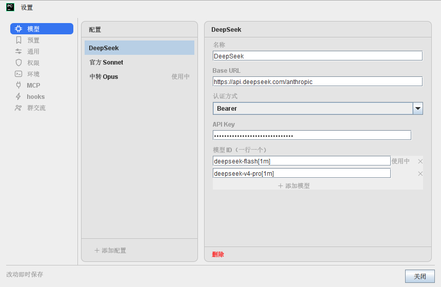
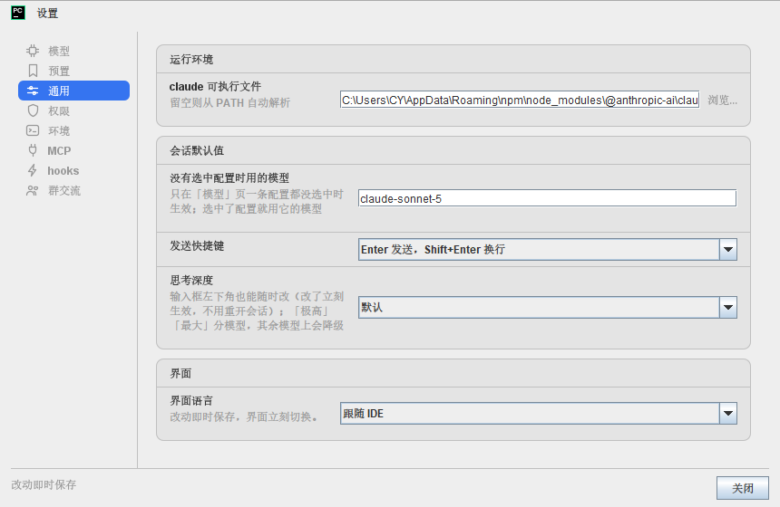
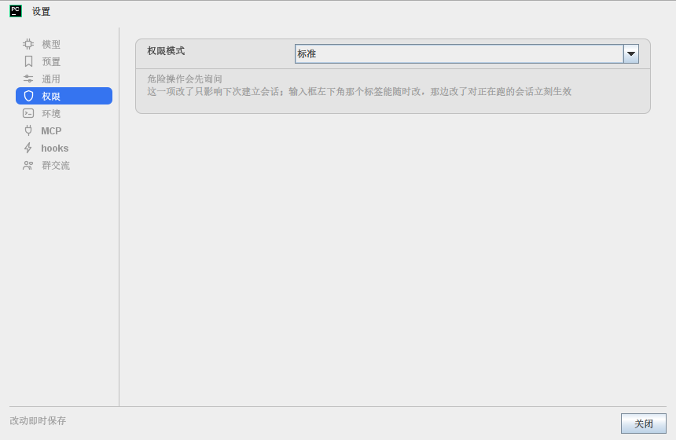
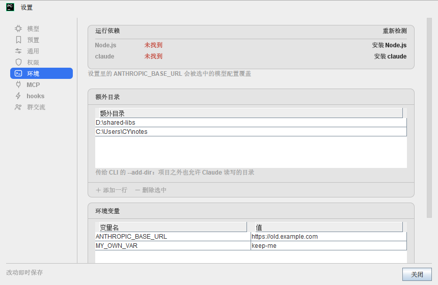
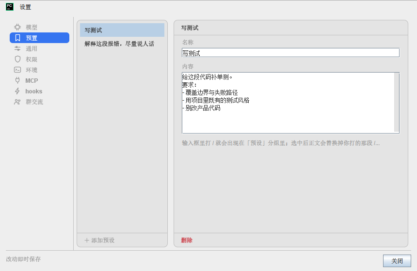
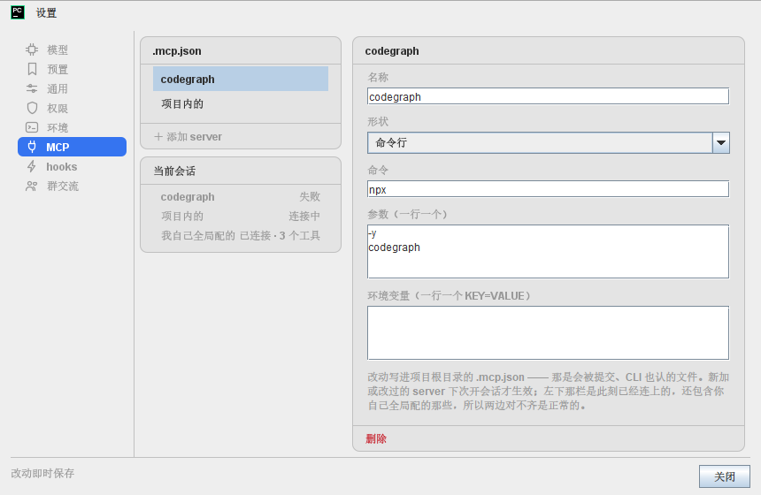
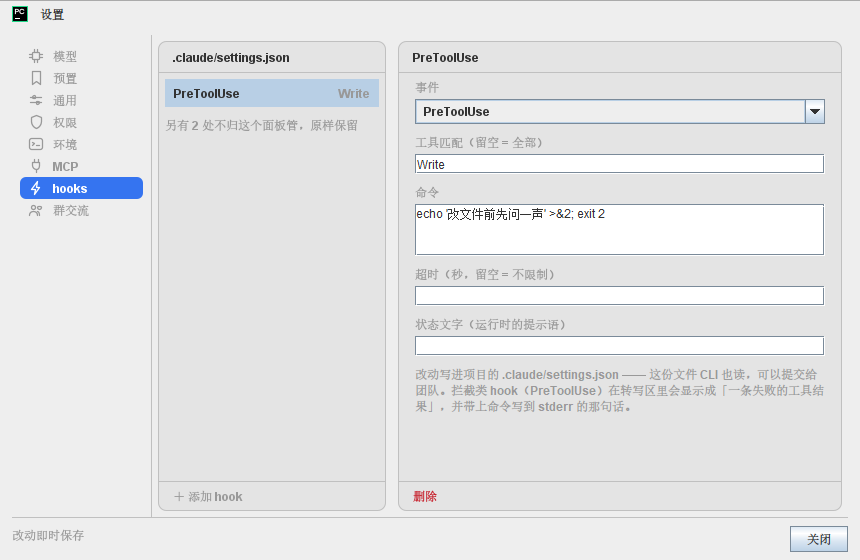

跟选型稿的三处差别（都在你选的两条之外，逐条报备）
- 右栏那四页（模型 / 预置 / MCP / hooks）的表单仍是「标签在上、控件在下」，没有跟着单栏页改成「标签在左」。
原因：表单栏只有 456px，扣掉卡片两层内边距再让出一个标签列，控件只剩两百来像素 —— 而这一栏里的值最长
（Base URL、一行一个的模型 ID）。探针里那条
https://api.anthropic-relay.internal.corp.example.com/anthropic会当场被切。单栏页有 656px，标签列让得起。 - 导航没做分组标题 —— 你选的「不分了」。
- 权限页那个 6 档下拉这轮没动 —— 你选的「这轮不动」。
验了什么
- 中文全量用例全绿；英文那遍的失败集与改动前逐条一致（那 163 条是既有的中文字面量问题，与本次无关）。
- 顺手钉住的：
SettingsCardTest（控件是行的直接子件 / 标签列对齐 / 卡不是弹簧 / 卡底是圆的且与页底不同色）、SettingsNavTest（选中铺强调色、八枚图标每枚都画得出东西）、FieldLookupTest（新的找控件契约：旧布局与卡片行语言各一条合成夹具）。 - 改之前先把整套用例的「找控件」契约重写成按控件类型找（
FieldLookup.kt）—— 卡片行语言会让旧写法 把说明那块 JTextArea 当成输入框，而且不报错。






.mcp.json（能改）与「当前会话」（只读）——它们回答的是两个问题